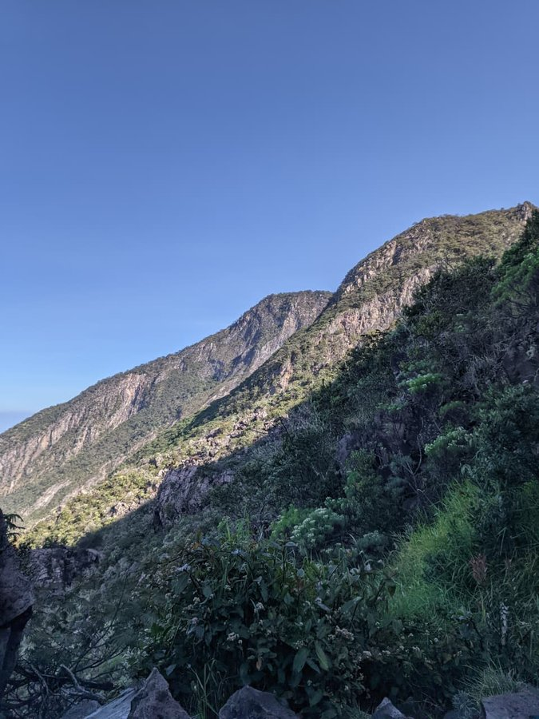
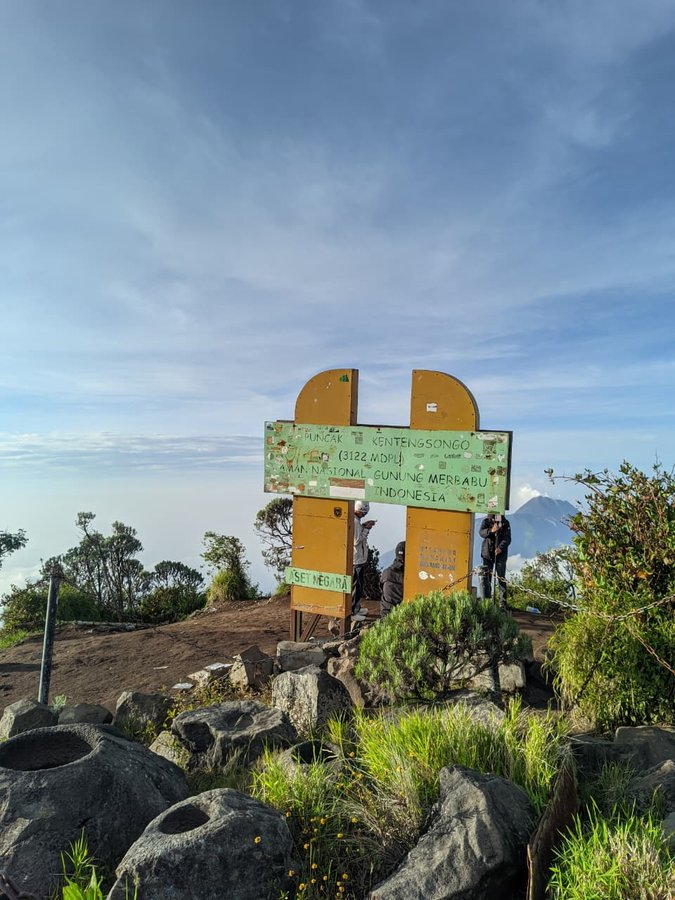
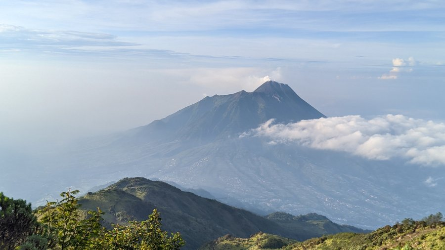

Siap Mendaki?
Kami Siapkan Alatnya.
Barameru Adventure menyewakan perlengkapan camping dan mendaki gunung yang lengkap, terawat, dan harganya bersahabat untuk petualangan Anda.
0
Rating Google Maps
0
Ulasan Pelanggan
0
Jenis Alat Tersedia
2023
Tahun Berdiri
Tentang Kami
Profil & Sejarah Barameru Adventure
Teman Perjalanan Para Pendaki di Yogyakarta
Barameru Adventure (dikenal juga sebagai Barameru Outdoor) adalah usaha penyewaan alat camping dan mendaki yang berlokasi di Yogyakarta. Kami melayani pendaki, pecinta alam, mahasiswa, hingga keluarga yang ingin berkemah tanpa harus membeli perlengkapan sendiri.
Dari tenda, carrier, sleeping bag, kompor, hingga paket lengkap untuk pendakian gunung, semuanya tersedia dengan harga yang terjangkau.
- Peralatan lengkap untuk camping & pendakian
- Tersedia paket hemat untuk 2, 3, dan 4 orang
- Rating sempurna 5,0 dari 762 ulasan di Google Maps
- Buka setiap hari, hingga pukul 21.00 WIB



Sejarah Singkat
Barameru Adventure Berdiri
Usaha penyewaan alat camping dan mendaki resmi dibuka di Yogyakarta untuk melayani kebutuhan perlengkapan outdoor.
Koleksi Alat Bertambah
Katalog berkembang mencakup tenda, tas carrier, sleeping bag, perlengkapan masak, penerangan, hingga pakaian dan sepatu gunung.
Dipercaya Ratusan Pelanggan
Meraih rating 5,0 dari 762 ulasan di Google Maps dan aktif melayani pelanggan lewat WhatsApp, Instagram, dan TikTok.
Struktur Organisasi
Tim di Balik Layanan Barameru Adventure
Pemilik
Kasir
Staf Gudang
Staf Perawatan
Katalog & Pricelist
Temukan perlengkapan camping dan mendaki dengan harga sewa terjangkau.
Syarat & Ketentuan Sewa
- Peminjam harus meninggalkan kartu identitas (KTP / SIM / KTM).
- Kerusakan dan kehilangan menjadi tanggung jawab peminjam.
- Maksimal pengembalian pukul 21.00 WIB.
- Pengembalian lebih dari 21.00 WIB dianggap memperpanjang sewa 1 hari.
Pilihan Perlengkapan
- Semua
- Paket
- Tenda
- Sleeping System
- Tas
- Cooking Set
- Penerangan
- Pakaian & Lainnya
Lokasi Kami
Mudah dijangkau di kawasan Condongcatur, Depok, Sleman
Alamat
Jl. Tantular No.427c, Pringwulung, Condongcatur, Kec. Depok, Yogyakarta, Daerah Istimewa Yogyakarta 55281
Jam Operasional
| Senin – Sabtu | 09.00 – 21.00 WIB |
| Minggu | 13.00 – 21.00 WIB |
Frequently Asked Questions (FAQ)
Pertanyaan yang sering diajukan seputar penyewaan di Barameru Adventure
Hubungi Kami
Tanya ketersediaan alat dan pesan sekarang